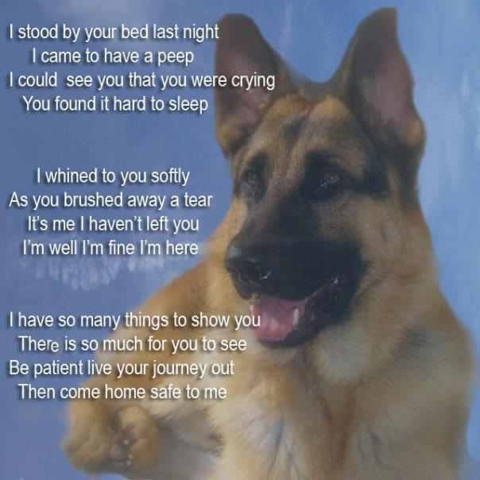
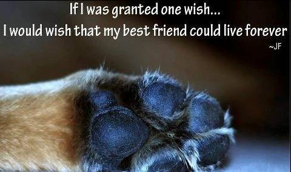
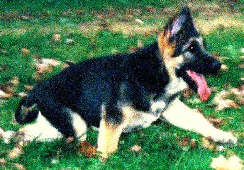
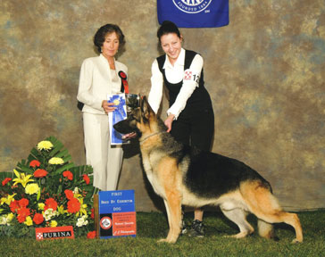
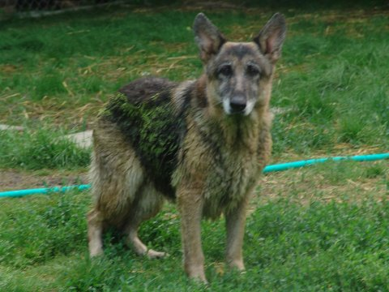
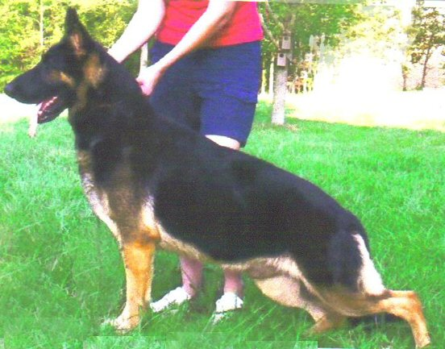

Rainbow Bridge
 |
HERE WE WOULD LIKE TO REMEMBER OURGERMAN SHEPHERDS THAT HAVE CROSSEDOVER THE RAINBOW BRIDGE.
|
 |
|
September 5, 2014 by Marcia Hadley   |
|
J-Mac's RB Rocket J Shepherd CGC
TDI RN TDIA TC TDIAOV ThD ORT(b) |
|
7-23-2013 by Marcia Hadley: On July 23, I held my beautiful Cara in my arms for the last time. She was born February 2, 2003, a brilliant daughter of my Black Oak's Wiseguy v Hadori X Hickory Hill's Abigail, a Am.& Sel.Can.Ch.Langlitz's Rapid Fire daughter. At almost seven, Cara had her one, and only litter of 11 puppies. She raised them all, being an excellent mama. Two daughters remain here with me. Cara was tough, fearless, and no non-sense. She did anything I asked of her. She fought a horribly aggressive breast cancer to the end, and as I rubbed her face and told her she could go~ That her girls would be here to watch over me, she breathed her last. Her spirit will live on in Zenny, and Daisy who mirror her in appearance, and character. As I grieve for my heart dog, I will still see her daily in their faces. Thank you Cara, for being my girl.
Marcia Black Oak German Shepherds
|
|
6/17/2013 by Steve Dobbins: I cannot believe that I am writing about a third dog passing over the Rainbow Bridge. Two weeks ago I was writing about Cimarron's Listen to Her Heart (Dinkums) passing. Two weeks before that I was writing about the passing of my old girl Roxey, Cimarron's Reaction to Action RN. Today, I am writing about a youngster. He wasn't even 14 months old. Cimarron's Utter Chaos passed over the Rainbow Bridge early this morning. Chaos was on his way to what I think would have been a championship and then some. He was the pick of the litter that has already shown so much promise. I was very confident that his dam would earn her ROM from these 5 boys. Just this past weekend, I was bragging about him to anyone that would listen. I returned home from shows Sunday evening to find him not himself. Nothing extraordinary, just kind of out of it. Then it progressed into not eating and then the retching. I scrambled to find the home phone number of my vet with no success. I tried contacting my backup vet with the same result. I was wondering if it is written in stone that dogs must get sick late on Sunday?
Well, the periodic retching continued. He was not bloated nor were his gums pale. He seemed to be running a temperature. I hoped he would be ok until morning. But he died shortly before the vet even opened. I took him to the vet anyway and had a brief necropsy done. No bloat, No torsion. However, the vet said the small intestine walls were red and hemorrhagic, and there was free blood in the abdomen. He diagnosed the cause of death to be hemorrhagic enteritis. This kind of sounds like toxic gut, but I am not sure.
Seven hours after he died, he has been buried right next to the two freshly dug graves of the past four weeks. Sorry, but I find this kind of depressing. I am not even sure that I have a picture of him. Chaos' sire and dam are Cimarron's King of Wishful Thinking and GCH CH Cimarron's Lovin' Touchin' Squeezin'.
Cimarron's Utter Chaos April 19, 2012 - June 17, 2013.
/steve d.
|
|
6/3/2013 by Steve Dobbins: Today I lost another when Cimarron's Listen To Her Heart crossed the Rainbow Bridge. Dinkums was a littermate in my eight champion litter. Although she did not finish, she did earn a major reserve and was a qualifier for her sire and dam. Dinkums hated the show ring which was unfortunate as she was the best mover of the litter. She was always playing head games with me and was always conniving to see what she could do to p:ss me off. Her sire and dam are CH Jokare's Kokoum ROM OFA and Cimarron's Nightlife ROM OFA. Dinkums had been losing a lot of weight over the last couple of months and this was probably due to cancer. At least she is now free of any pain.
Rest in Peace. Cimarron's Listen To Her Heart OFA March 21, 2005 - June 3, 2013
/steve d.
|
|
5/20/2013 by Steve Dobbins: Today, my last Rhiannon 'pup' went over the Rainbow Bridge. Cimarron's Reaction to Action RN OFA gave her last gasp as she said good bye. Roxey was thirteen years young. She enjoyed going for her daily swim in my pond, often coming back covered in green algae. She had even enjoyed her swim as recently as three days ago. Her gray in her muzzle has long surpassed her eyes and was now climbing up her ears. She spent so much time in the pond during warmer weather that her coat was constantly wet. I started calling her "Old Moldy".
Roxey became her dam's third qualifier by getting a major reserve. She finished her mom's ROM by earning her Rally Novice title. Roxey is out of CH Karizma's Heartbreaker OFA and my very special girl, Am/Can CH Cimarron's Rhiannon CD ROM OFA.
Something happened Saturday as she became really wobbly in the rear. Yesterday, she did not eat. Last nite, I left her out with some older dogs. She did not come in to get out of the rain. She passed away a short time after I found her this morning. She is the last of my "birthday" dogs.
Rest in peace, my old girl.
Cimarron's Reaction to Action RN OFA April 20, 2000 to May 20, 2013.
/steve d.

|
|
12/22/2012 by Mariliee Wilkinson; Today, I said “goodbye” to my bestest friend, Dude. He was born on 1-11-01 and went over the bridge on 12-22-12. We went thru some “times” together. He helped me so much, especially when by beautiful Annie crossed over. He loved to play with the puppies and was “OK” with the adult males. Always loved the girls. He made some beautiful puppies. He told me last nite that the time was
near, but I didn’t want to face that. He didn’t leave me much choice
this am.  Looking back on the memory of The dance we shared ‘neath the stars above, For a moment, all the world was right How could I have known that you’d ever say goodbye? And now, I’m glad I didn’t know The way it all would end, the way it all would go. Our lives are better left to chance, I could have missed the pain But I’d have had to miss the dance. Holding you, I held everything For a moment wasn’t I a king? But if I’d only known how the king would fall Hey, who’s to say, you know, I might have changed it all? And now, I’m glad I didn’t know The way it all would end, the way it all would go. Our lives are better left to chance I could have missed the pain But I’d have had to miss the dance. Yes my life, its better left to chance, I could have missed the pain But I’d have had to miss the dance.
|
|
12/4/2012 by Helen Rockman: Patra Faye, was euthanized on Tuesday afternoon, December 4, 2012. Patra's beloved breeder Judy DeRousse drove to Dr. Garber's clinic at Belkin Animal Hospital from Washington, MO to be with her and me. Patra knew that she was very much loved and there is some peace in having that knowledge.
On July 17, 2012 Patra had surgery for mammary carcinoma. Two breasts and surrounding lymph nodes were removed. All seemed to be going well until recently. Patra was having alarming bouts of regurgitation from the megaesophagus she has had all of her life. She was treated with an oral antibiotic and medication for digestion. When I discovered a lump in the groin area close to her left breast a week later, I returned to the vet; Dr. Garber treated Patra Faye with a heavy duty antibiotic by injection, hoping that this would help with the inflammation/lump and digestion and hoping that this might be mastitis. I was able to help Patra Faye with weight gain by feeding her 4 times a day, giving her small amounts of water every two hours. Unfortunately, cancer had returned with a vengeance. Within five days the aggressive lump had spread; skin and two breasts were affected. This was different from the first bout as this new cancer was invasive, nasty, traveling throughout Patra’s body very rapidly. We made the decision to euthanize Patra Faye since surgery was not possible; the area involved was too large.
There is a terrible void now. Patra was like my anchor. After Brie had died in March, 2011, Judy, who had bred Brie, brought Patra to my house, "loaning" her to me for awhile to keep me company until my puppy was born. What happened is that I fell in love with Patra Faye. We sort of found each other. I needed a Friend and she loved being loved. It was pretty easy. Judy transferred the papers to me in August, 2011. Patra Faye was like a shooting star.....I had her for a brief time. There was constancy for me, a wonderful, steady dog with a fantastic temperament and Patra Faye's ever-present appreciation and gratitude. She will be greatly missed by Liz, Gregg and me.....and Juliette, her younger canine sister, whom she mentored. And we will miss our visits to St. Joseph's Hospital in St. Charles, MO as Patra, in addition to receiving two obedience titles, her CGC, TDI, passed her ATT, and was also a certified therapy pet with Love on a Leash. As recently as one month ago, Patra had a lesson with Sharon West. We needed one more leg for our CD. Patra's off-lead heeling needed work because she kept going wide in the ring. This was understandable as Patra was also a Conformation Champion. But, we were working and training.
Patra Faye is very much missed by my Family & Friends, Judy DeRousse, her Family, particularly her daughter, Michele, who owned Patra for many years, and Julie Foster who handled Patra and was one of Patra’s former owners, and for the patients and persons whom Patra served with her therapy work. I was proud to have been Patra’s owner and caregiver for the last year and one-half of Patra’s life. My daughter, Liz Rockman, said aptly that ‘we could all learn a lesson from Patra’. What a sweet, gentle girl she was. Patra was ‘true blue’….protectress of her people, her yard, house and vehicle. She was a great dog. It’s a huge loss.
Love, Helen, Elizabeth Rockman, Gregg Homerding, Juliette Amelia
|
|
5/13/2012 by Steve Dobbins: On
Sunday, I lost my champion, Ch Cimarron's American Girl, affectionately
known as Amy or Red Varmint. Amy was the sixth champion from
a
litter of ten that has so far produced 8 champions. I will take her to the vet to see if he can find out why she died, because I have not a clue why she did. She joins her siblings, her brother, Ch Cimarron's Refugee, and her two sisters who passed away from cancer, Ch Cimarron's Free Fallin' TC, and GCh Cimarron's Here Comes My Girl TC. Ch Cimarron's American Girl OFA (03/21/2005 - 05/13/2012) /steve d. |
|
4/18/2012 by Kathy Redford: Dear Dog
Friends, |
|
3/12/2012 by Steve Dobbins: Today, my Grand Champion
Cimarron’s Here Comes My Girl TC OFA, Pinky was the First champion and
First Grand Champion of a litter of ten Rest in Peace, my sweet girl,
Pinky Varmint. In Loving Memory of |
|
3/8/2012 by Mariliee Wilkinson: Mari-Fiori's Bella Fonte, aka
Mathilda & Zoom-Zoom |
|
2/20/2012 by Marcia Hadley: On monday morning I found my Gypsy
dead. She would have been ten on her birthday in April. |
|
1/25/2012 By Helen Rockman for Bette Sill: Dear Friends, It is with great sadness that I am relating to you the devastating news that Bette and Bill Sill made the decision to euthanize "Tin," short for Rin Tin Tin today. Tin was an energetic, happy three year old, German Shepherd dog who absolutely loved his daily walks with Bill & Bette. Bette recently took Tin to Columbia where he received a title in Nosework. Bette and Tin were also involved in Herding lessons in Wright City with Tracy Parciak at RottiEwe Farm. Traci was hoping to show Tin in the spring. Bette and Bill were in the middle of things with Tin and Katie, their lovely Love on a Leash therapy pet. Tin was essentially asymptomatic until very recently. Xrays did not present a problem; however, a sonogram was performed. Subsequent exploratory surgery indicated that there would be a very poor prognosis. This wonderful dog was a soulmate to Bette and Bill. They lost Tin today around noon today. Bette is recovering from knee surgery which she had last Wednesday. Address
is: 12 Berkshire Drive Sincerely, Helen Rockman |
10/29/2011
By Steve Dobbins:
|
10-28-2011
By Marilee Wilkinson:
|
10-28-2011
By Marilee Wilkinson:
|
10-28-2011
By Marilee Wilkinson:
|
10-28-2011
By Marilee
Wilkinson:
|
|
9/12/2011 By Helen Rockman for Bette Sill: Dear Friends, Bette and Bill Sill said goodbye to their beloved German Shepherd Dog, Lotti, today. Lotti was almost fourteen years old, served so many people for a long, long time as a member of Support Dogs. For years, Lotti visited the hospital, nursing homes and libraries. What a wonderful dog she was....a real 'lady', dignified, loving and the alpha dog at home. Lotti mothered Katie, Bette and Bill's lab and Tin, their young GSD. Bette and Lotti came to the high school where I worked a few years ago. The students loved Lotti; she had a sweet manner, a grace about her. Lotti was a natural at therapy work; she loved visiting and was a wonderful companion for Bill and Bette all of these many years. Lotti was one of Judy Dean's babies. A real trooper, Lotti will be greatly missed. Helen |
|
7/15/2011 by Marcia Hadley: This morning at 7:a.m my Katie went to the Bridge. She had a long full life. From her two litters, she gave us 18 puppies. Her daughter Gypsy is here with us. Black Oak's Kate v Heinerburg OFA (07/07/1997 - 07/15/2011) Sire: Black Oak's De'Niro Judeen (Lothario son) Dam: Hadori's Chattahoochee (near her ROM) Linebred: Reno/Hawkeye Godspeed my beautiful girl. Marcia Hadley Black Oak's |
|
02-01-2010 By Marilee Wilkinson:
|
|
01-19-2010 by Judy McDowell McConwal’s Tonto July 1, 2001 – January 19, 2010 I had GSDs before I became a member of the St. Louis club. Rocky, whom you know, a full brother to Rocky (Bubba), and a bitch named Tonto (born 2001), “My Faithful Companion”. Since they were very active in agility they had regular visits with a veterinary chiropractor. At a routine visit, Dr. Perkins suspected Tonto might have Degenerative Myelopathy and referred me to the MU Vet School, to see a neurologist she knew who was conducting a DM study. That is how I became acquainted with Joan Coates DVM. Tonto tested positive on both sides (sire and dam) and Dr. Coates accepted her into the study. She went three days a week for physical therapy, which included the underwater treadmill (see picture), walks (uphill, around obstacles, and over cavalettis). Her therapy sessions were videotaped for study purposes. Tonto did not accept strangers readily, but she adored her physical therapist. She began her therapy in September, but by December she was beginning to deteriorate rather quickly, and had trouble getting up steps and onto her loveseat throne (yes, she was allowed on the furniture – she was a diva). After the first of the year, January 2010, Dr. Coates and I made the very difficult decision to help her across the “bridge”. On January 19, 2010 we were escorted into the “Quiet Room” for some private time before they took her to the back for pre-euthanasia testing which was done under heavy sedation. At no time during the study or the final testing was she in any pain. That is the only good thing to be said about DM….. When it was time to say good-bye, Dr. Coates came for me and she, her resident, Tonto’s therapist, and I were with her at the end. Most of the testing for DM is done post-mortem, so Tonto donated her body to science. As a final loving gesture, and a component of the study agreement, the Vet School arranged for Tonto’s cremation, and she is back home with me now. |
|
1/19/2006 by Steve Dobbins: For the Last Time.......... Rhiannon had not been eating for several days. She had passed part of a rag in her stool. The next day, she threw up part of a rag. Still not eating, I knew it was time to get her seen by a vet; to probably open her stomach and remove whatever was left of the rag. Twice before, with other dogs, I had had this surgery performed with no perceived danger by the vet. So in the morning, Rhiannon and I left for the vet's office with no real urgency. On the way there, she threw up some of the most indescribable putrid smelling vomit. Upon arriving at the vet's at 7 am, I had to search inside the university vet clinic for someone working the nite shift. Less than 10 minutes after leaving her, I found her almost dead - without breath, but still with a heart beat. They took her in and began giving her life support and doing x-rays. They found the blockage on the x-ray and began surgery. Upon opening up her stomach and intestines they found a substantially long piece of rope in her stomach and a shorter piece in her intestines, but her intestine had ruptured. Upon exiting surgery, the vet updated me with her status saying that she had probably less than a five percent chance of survival. Two hours later they told me that she had stopped breathing on her own and had become brain dead. They strongly recommended stopping the breathing machine and giving her an overdose of the pain killing barbiturate she was on so that they could mercifully end her life. For two grueling hours, I was tortured with trying to make a decision of ending the life of the best friend I had ever had. But, I knew it had to be done. Ten hours after going out for our morning walk together, she was gone. Last night and through today, I felt so empty, but I knew the worst part was yet to come. I went and picked her up at the vets office. The vet had tears coming from his eyes as he briefed me on what had happened. Still,I had to try to be strong and hold back my own tears. The veterinary assistant helped me put her box in my truck. She asked about putting her in the back. I said no, she deserved better than that. She needed to be up front in the seat she occupied so many times on our trips to dog shows. The drive home was agonizing. Beside me, lay my devoted companion, who only the day before had filled so much of my life. Now, there was only silence. I arrived home and let out the rest of my shepherds into the yard. Then I went back to my vehicle to bring in Rhiannon. As I came through the gate with the box, I could sense the change of attitude of my dogs from one of romping around to one of a solemn grim silence. I set the box down. I stepped back and tried to prepare myself for the moment I had been dreading for the last several years, the fact that my best friend was gone forever. I opened the lid and saw her laying so peaceful, but without life. The students at the veterinary school had done such a wonderful job of making her look so comfortable in her little bed. And then it finally hit me...... The flood of tears that erupted, as I realized that she was truly gone. No more would I have ask for her permission to use her couch. No more would she give her little smile by raising her upper lip to all of her subordinates that tried to approach me as she lay upon my back as I lay upon the couch. No more would we share the same birthday. Her three sons went up to her box and saw the reason for my depression. All three came to where I was sitting and sobbing. One put his head on my knee, one lifted up his front foot and put it on my other knee, and the other put his head on my shoulder. I am writing these words with tears streaming down my face,trying to see what I have written. I know that I have seen my friend for the last time. Good bye and sleep well,Sugar. Maybe I will be worthy enough to see you in a different world. In Memoriam American and Canadian Champion Cimarron's Rhiannon Companion Dog, Register of Merit OFA Hips and Elbows April 20, 1994 - January 18, 2006 |

{kind=link}